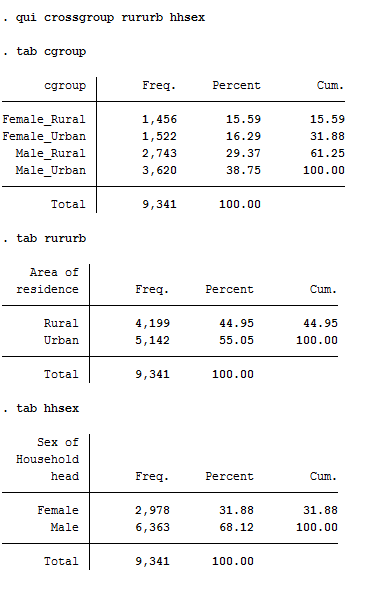

|
The GROSSGROUP Stata module |
||
| The CROSSGROUP Stata module allows
to generate a new categorical variable based on different combinations
of the modalities of a given two categorical variables. Example:  |
||
|
|
||
| Downloal the module: | crossgroup.rar | crossgroup.zip |